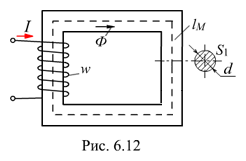
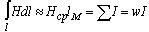
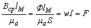
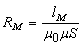

6.2.6.1. Закон Ома для однородной магнитной цепи
Запишем закон полного тока для однородной магнитной цепи (рис. 6.12) с параметрами: lM - средняя длина магнитной силовой линии (м. с. л.), м; S1 – площадь сечения ферромагнитного сердечника, м2; I - постоянный ток в катушке с числом витков w и найдем магнитный поток Ф в сердечнике (потоками рассеяния пренебрегаем):
 ,
где Hср = Вср/ma и Вср = Ф/S1 - средние напряжённость и индукция магнитного поля в сердечнике.
Откуда получим выражение  или
Ф = F/RM, |
(6.9) |
названное законом Ома для однородной магнитной цепи (по аналогии с законом Ома для электрической цепи: I = E / R), где F = wI [А] - МДС катушки;  - магнитное сопротивление цепи, 1/Гн.
Отметим, что магнитное сопротивление RM является функцией магнитной проницаемости ma = m0m среды (материала). Неизвестная величина m в свою очередь зависит от величины магнитной индукции B (или магнитного потока Ф), что не позволяет непосредственно рассчитать магнитный поток. Если известны графики B(H) и ma(H) то, выбрав усредненное значение ma, можно найти приближенное значение потока Ф.